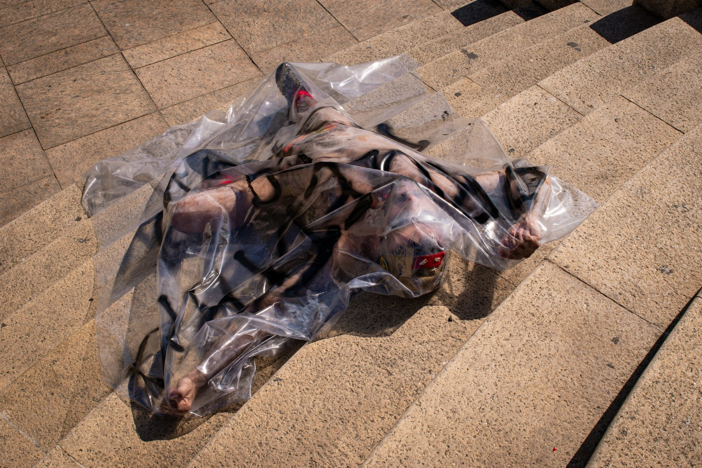

EZEQUIEL
AGUILERA
MENU
Investigación
Publicaciones
Fotografía
Notas
CV
Sobre mí
ENSAYO FOTOGRÁFICO / 4 IMÁGENES
Proletario
do porno
←︎ Volver a fotografía

Proletario do porno — 01 / 04
Proletario do porno — 02 / 04
Proletario do porno — 03 / 04
Proletario do porno — 04 / 04
←︎ Dragón rojo
Stormtrooper →︎